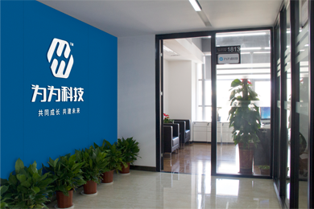

- {{el}}
湖南为为科技有限公司是一家专业提供信息化咨询服务、软件服务、系统集成服务、个性化解决方案的政企信息化服务提供商。 公司秉承“共同成长、共建未来”企业宗旨，以提供专业信息化咨询和建设为服务基础，以不断地开发创新为技术根本，致力于推动政企信息化改革，提供全面的信息化解决方案。 我们始终相信，智慧科技改变世界，公司将持续提升客户体验，实现与客户的互利共赢，助力客户实现梦想，为客户创造更大价值。
公司现已拥有多项软件开发专利。业务范围包括：OA、ERP、CRM、SCM等；所服务的政府单位有： 人大政协、纪委、卫计局、农业局、统计局、文化局、档案局、食药监、住建局等，已为多家企事业单位提供了优质的信息化产品服务， 并与亚马逊、用友、金蝶、华为、浪潮、等多家企业建立了紧密的合作伙伴关系。
公司结合市场的需要，利用计算机软件、硬件、操作系统技术、数据库技术、 网络通讯技术等所形成的系统集成，可使资源达到充分共享，实现集中、高效、便利的管理；互联网技术的成熟为企业信息管理系统增加了与客户实现信息共享和直接的数据交换能力， 为客户带来业务上的深度增值，同时根据客户的需求制定个性化解决方案，为客户提供专业的信息化建议。

33333
444444
55555